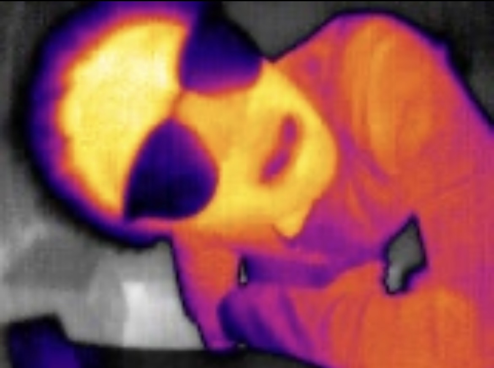
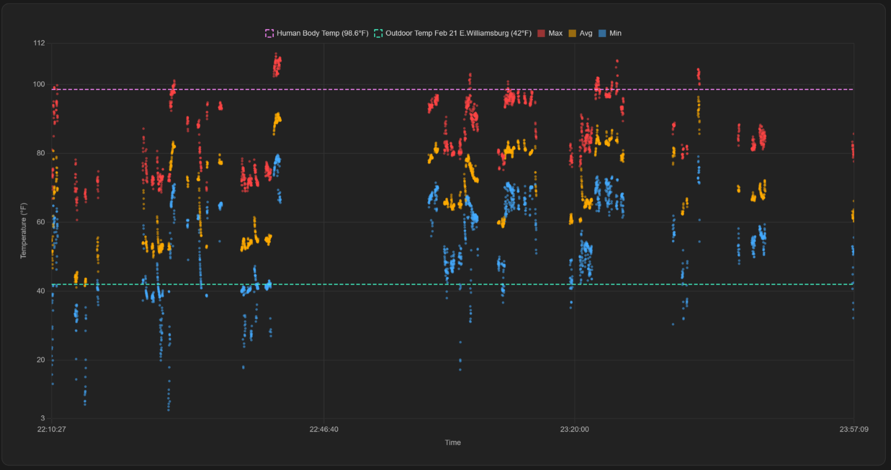
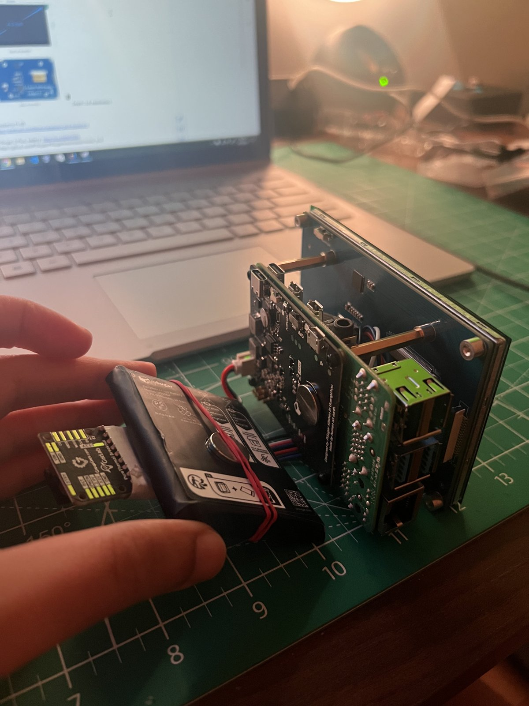
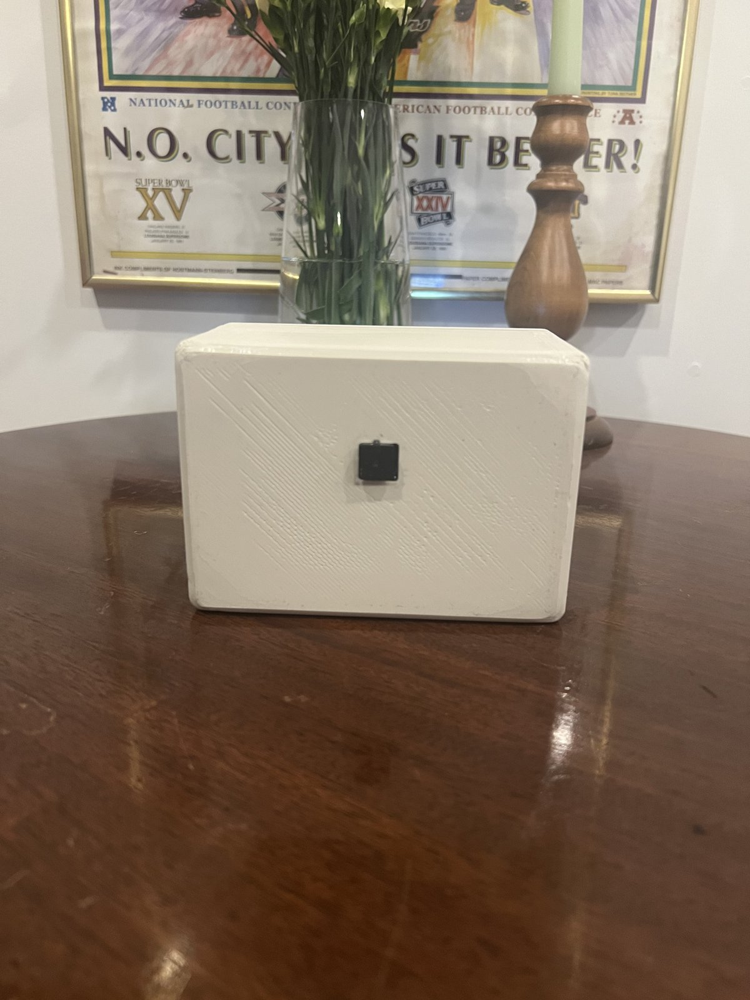
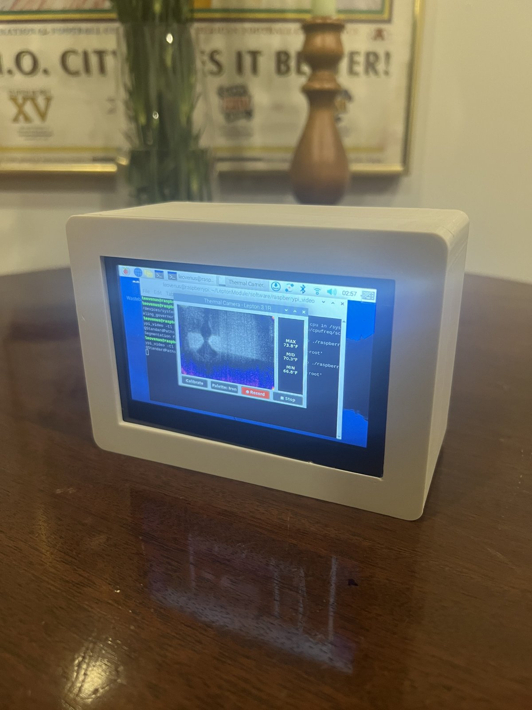
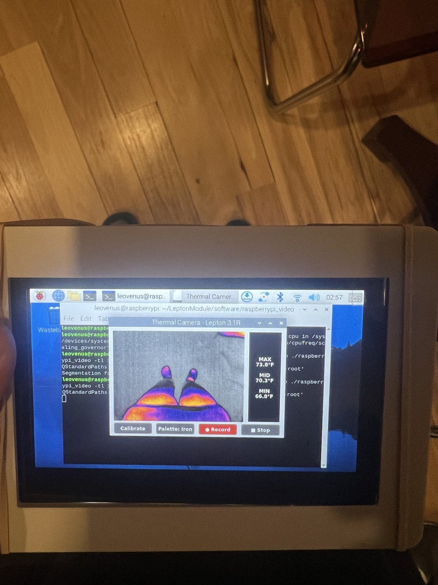
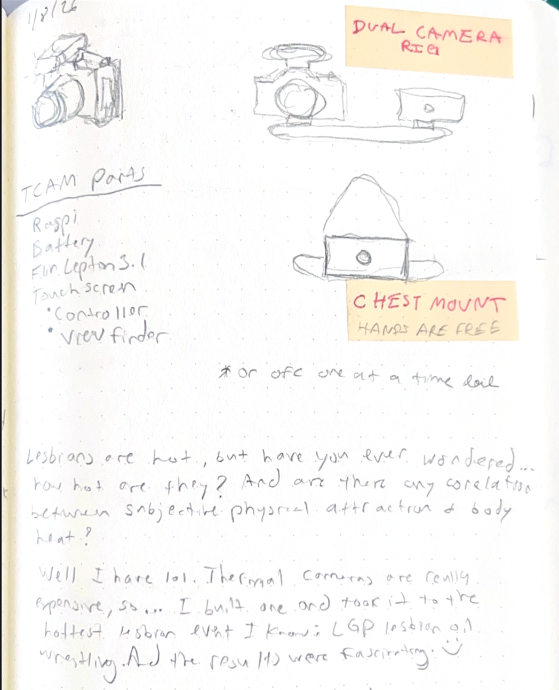

court@archive:~$ ls -t work/thermalCameraBuild/_
Raspberry Pi Thermal Camera Build
A thermal camera built using a Raspberry Pi, a FLIR Lepton thermal camera module, and a custom 3D printed enclosure. The camera is capable of capturing thermal images and videos, as well as accurate temperature data. This project was completed to explore using thermal imaging technology to do portrait photography and to gain hands-on experience with hardware integration and software development.

Overview
Using a raspberry pi and a thermal sensor module, I created a simple app to run the sensor, map the temperature values to colors and plot those pixels into a real-time viewfinder. Then using OpenCV, I added the ability to record the frames to AVI files and record the temperature values to a matching CSV file.
Experiment 1
Recording the temperature data was really important to me as through the 2 month development of the camera I formed the hypothesis that I’d be able to capture the impact of oxytocin and sexual arousal on body heat in lesbian/queer spaces. I then took the camera out to Lesbian Oil Wrestling as my first experiment.
Results and Learnings of Experiment 1
Below is a scatter plot of all of the temperatures recorded during the event over time to show a progression of temperatures throughout the event. Each frame recorded a max, avg and min temperature. Additionally I added markers to show the weather on the day as well as the average human body temperature. This was my first experiment to try and prove my hypothesis and it ultimately was a fail. I quickly discovered a bug with my code where the camera starts and needs to be manually calibrated. Because of that many of the clips and frames recorded inaccurate data that made the temperatures way lower than they should’ve been. This is easy to see with the graph as many of the max points fall under the avg human body temp despite all of the frames including humans. I will need to conduct another experiment with a better handle on all of the variables.

The footage from the camera, however, turned out to look quite cool and interesting. See video below. My intention was to take individual frames from the videos to serve as images but I learned I should’ve been closer to the subjects to get any worthy stills.
Process
The sensor used is a FLIR Lepton 3.1R, a small uncooled microbolometer. Each of its 160×120 pixels is a tiny element whose electrical resistance changes as infrared radiation warms it. It measures heat directly, which is why it works in total darkness. The "R" means radiometric: the camera is factory-calibrated, so each pixel can report an actual temperature, not just "hotter" or "colder."
I began by pulling the base code from the Flir Lepton repository on GitHub. The code allowed for the basic running and viewing of the thermal sensor. Once the basics were working, I added the ability to, convert the raw pixel values to temperatures. With radiometric (TLinear) mode on, each value is in hundredths of a Kelvin, so value ÷ 100 − 273.15 gives °C, then it converts to °F, calculate the min, max and average temperatures of each frame, maps each pixel to a color from the selected palette, and plot the pixels to the GUI viewfinder as well as an AVI file. The script also builds the Qt window with the image display, and additional custom UX like temperature labels, legend, palette buttons, record button and FFC button.





Inside the build: the Raspberry Pi, battery and thermal sensor boards stacked on a cutting mat
Tools used:
Raspberry Pi 4B · FLIR Lepton 3.1R Thermal Camera Module · Raspberry Pi 7" Touchscreen Display · Fusion 360 · Prusa Mini 3D Printer · C++ · OpenCV